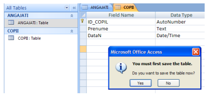
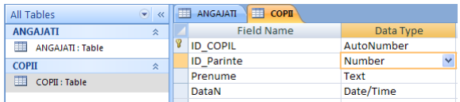
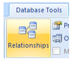
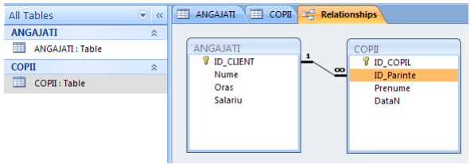
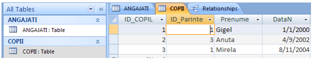

F I Ş A Nr. 3
Crearea relaţiilor
Să presupunem că avem o tabelă unde ţinem datele despre copii angajaţilor. Din
ribbon-ul
Mergem în modul de vizualizare  pentru a realiza
structura tabelului. În acest moment introducem numele noului tabel: COPII. Apăsăm OK
pentru a realiza
structura tabelului. În acest moment introducem numele noului tabel: COPII. Apăsăm OK
|  |
Structura tabelului va fi următoarea:
|
Salvăm modificările şi mergem în modul DatasheetView. Introduceţi o serie de date ca în imaginea de mai jos.
Introduceţi o serie de date ca în imaginea de mai jos.
 |
Acum avem două tabele: |
|
Observăm ca deocamdată cele două tabele sunt complet independente şi nu există nimic comun acestora. |
|
În tabela COPII mergeţi in modul
Adăugăm o nouă coloană imediat după coloana ID_COPIL: facem click dreapta pe linia
Introducem numele ID_Parinte şi ca tip alegem acelaşi ca şi PrimaryKey-ul din ANGAJATI – ID_CLIENT (Number).
Salvăm şi revenim în modul
|  |
Pentru a stabili exact relaţia, adică pentru a specifica faptul că datele din coloana ID_CLIENT din ANGAJATI este replicată în
ID_Parinte din COPII, mergem în |
|
Cele două tabele nu sunt încă relaţionate. Tragem (Drag&Drop) coloana ID_CLIENT din ANGAJATI peste coloana ID_Parinte din COPII. În fereastra deschisă bifăm checkbox-ulEnforceReferentialIntegrity. Apăsăm Create. |
|
Observăm că apare relaţia ‘1 la n’ (‘1 la ∞’).

Deschidem tabela COPII. Coloana
Tot în coloana ID_Parinte introducem 1 şi pentru linia 3 (Mirela). Asta înseamnă că părintele Ionescu are doi copii: Mirela şi Gigel. Introducem 3 în coloana ID_Parinte din rândul 2 (Vasilescu are un singur copil, Anuta)
